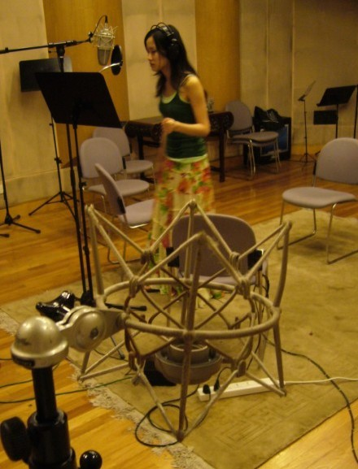

新专辑的录音已经进行一半了。很快大家就可以听到我的作品了。
距离上一张专辑《痒》已经整整二年的时间了。
非常感谢大家一直记得我，在歌唱节目中选唱我的歌曲，非常的意外和荣幸。这也更加坚定了我的信心---只要是好音乐，就要努力的做下去，因为迟早会被听到。
这次帮我担任制作人的，是打造天王天后如阿妹、Jolin等专辑的阿弟仔老师，八卦一下，他当歌手的时候获得过金曲奖。从台湾飞到上海帮我录音，我以小歌迷的姿态迎接他，忐忑不安。可是他人超级随和，录音的时候买便当他什么菜都OK，喝什么饮料都随便。不过，录音中有一点不满意的话，他是不OK的。
先汇报到这里。放一张我在录音室唱的披头散发的照片。
